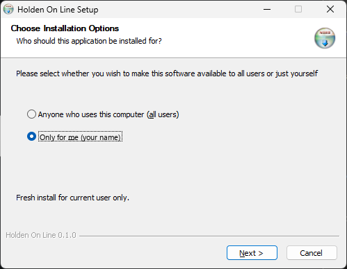
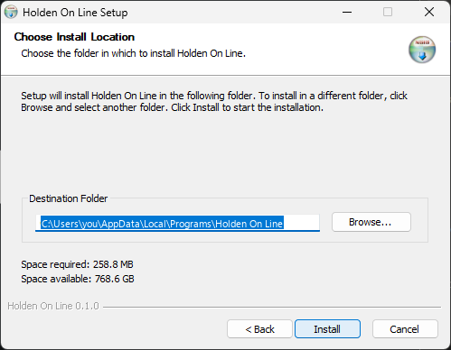
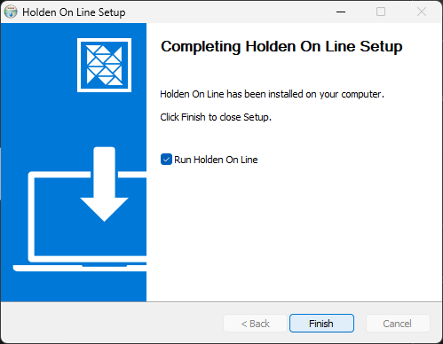
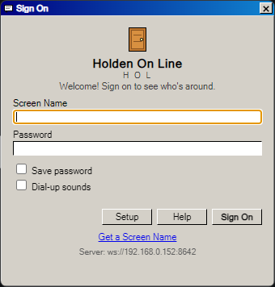

Holden On Line — How to install it
_ □ ×
Holden On Line — How to install it
_ □ ×
How to install Holden On Line
Six steps, about five minutes, on Windows 10 or 11. Partway through, Windows shows a blue warning about the file — that is expected, and step 3 shows which button to press.
Get the file
Go to holdenportal.com/hol and click the big Download Holden On Line button.
It saves into your Downloads folder — about 75 MB, so give it a minute. If your browser asks, choose to keep the file.
Open the file you just downloaded
Click it in your browser's list of downloads, or open the Downloads folder and double-click HoldenOnLine-Setup-0.1.8.exe.
Windows shows a blue warning. This is expected.
Windows shows this box for any program it does not recognize yet. It has not found anything wrong with the file.
The button you need is hidden. Click More info first — the box then grows and shows a Run anyway button.
Windows protected your PC
Microsoft Defender SmartScreen prevented an unrecognized app from starting. Running this app might put your PC at risk.
First: click More info
Windows protected your PC
Microsoft Defender SmartScreen prevented an unrecognized app from starting. Running this app might put your PC at risk.
- App:
- HoldenOnLine-Setup-0.1.8.exe
- Publisher:
- Unknown publisher
Then: click Run anyway
“Unknown publisher” is normal here. If you press Don't run by accident nothing is broken — open the file again and start step 3 over.
If Windows asks “Do you want to allow this app to make changes?”
Click Yes. Most people will not see this one at all — it only appears in some setups.
Work through the install screens
Click Next, then Install, then Finish.
Leave every setting exactly as you find it — in particular leave Only for me selected on the first screen. It takes a few seconds.



Sign on for the first time
Holden On Line opens to the Sign On window. If you do not have a screen name yet, click Get a Screen Name and choose one — that is the name everyone will see you as.
You will also be asked for the Holden On Line password. It is not printed anywhere — ask whoever invited you and they will tell you.
Then sign on. From now on, open Holden On Line from the Start menu or your desktop. If it says it cannot connect, get in touch — that is a setting at our end, not something you did wrong.
